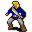

Gorwath¶Where to find Gorwath: Crossglen: crossglen
{ .sprite }
| Type | NPC (can be spoken to; cannot be attacked) |
| Role | Starts You're the postman |
| Found in | Crossglen |
| Entry ID | gorwath |
| Introduced | v0.7.14 |
Quests¶
- You're the postman: stages 10, 12, 15, 30
Dialogue simulator¶
Set the quest stages, items and other conditions that apply to your game, then start the conversation with Gorwath. The simulator applies the game's own rules: it performs the same silent checks, offers only the options that would be shown in the game, and applies their effects (quest stages, items handed over, rewards) as the conversation proceeds.
Rules verified against v0.8.18 game code (ConversationController.java) and dialogue data.
Dialogue (25 lines)
What the dialogue says, exactly as in the game files. Lines are listed once; links jump to the line a choice leads to.
gorwath (silent check: the first matching branch below is taken)
- branch 1 (if reached stage 30 of You're the postman) → gorwath_done
- branch 2 (if reached stage 20 of You're the postman) → gorwath_love
- branch 3 (if reached stage 15 of You're the postman) → gorwath_tmp
- branch 4 (if reached stage 10 of You're the postman) → gorwath_letter_20
- branch 5 → gorwath_letter
gorwath_done Gorwath: “Thanks again for your great help!”
- “My pleasure.” → gorwath_exit
gorwath_love Gorwath: “You are back! Did you find Arensia?”
- “Yes. I gave her the letter and she asked me to tell you that she loves you too.” → gorwath_love_1
gorwath_tmp Gorwath: “Did you give her the letter yet?”
- “Eh ... no. I thought, it wasn't that important.” → gorwath_tmp2
gorwath_letter_20 Gorwath: “Would you be so kind to give her my letter?” — effects: sets stage 10 of You're the postman
- “Yeah sure, why not?” → gorwath_letter_50
- “No I'm busy. Good bye.” → gorwath_letter_22
gorwath_letter Gorwath: “Hey, Andor!”
- “I am not Andor. What do you want from him?” → gorwath_letter_1
gorwath_exit Gorwath: “I will go now and prepare a present for lovely Arensia. When we get married, you will of course be invited.”
- “OK. Bye.” → gorwath_exit_1
gorwath_love_1 Gorwath: “That's great! I'm so excited!”
- Next → gorwath_love_2
gorwath_tmp2 Gorwath: “Not that important?? I can barely breathe if I don't get her answer! Hurry now! Please, do.”
gorwath_letter_50 Gorwath: “Thanks a lot. Here's the letter. Go to Fallhaven and look for Arensia.” — effects: sets stage 15 of You're the postman, gives 1× Gorwath's letter
- “Fallhaven is a big city. How shall I find her?” → gorwath_letter_52
gorwath_letter_22 Gorwath: “You really don't want to help me? Then I have no more hope.”
- “Now, now. Give me your precious letter, I'll do it.” → gorwath_letter_50
- “Sorry, but I have no time. I have to find my brother now.” → gorwath_letter_24
- “Grow up and solve your problems yourself. I'm not a postman!” → gorwath_letter_24
gorwath_letter_1 Gorwath: “Oh, Andor promised to meet me here. Who are you?”
- “My name is $playername. I'm looking for my brother too, he has been away for a while now.” → gorwath_letter_2
- “My name is none of your business. Get out of our property now!” → conversation ends
gorwath_exit_1 Gorwath: “Before we go our separate ways, please take this ring that I found behind those haystacks over there.” — effects: removes monsters from crossglen, gives Kid's ring
gorwath_love_2 Gorwath: “You have truly earned these gold pieces.” — effects: sets stage 30 of You're the postman, gives 30× Gold coins
- “Thank you.” → gorwath_exit
gorwath_letter_52 Gorwath: “She is the daughter of Jakrar the woodcutter, so she will surely live there.”
gorwath_letter_24 Gorwath: “Good by then. I will not disturb you anymore. * Sob ” — effects:* sets stage 12 of You're the postman, removes monsters from crossglen
gorwath_letter_2 Gorwath: “Oh dear, oh dear. This is a very personal matter. I don't want everyone to know about it.”
- “I want to help you since my brother did not. Please tell me what's on your mind.” → gorwath_letter_3
- “I promise not to tell anyone.” → gorwath_letter_3
gorwath_letter_3 Gorwath: “Really? That's very kind of you.”
- Next → gorwath_letter_10
gorwath_letter_10 Gorwath: “You probably don't know me. I am Gorwath. I only recently moved to Crossglen to live with my aunt.”
- “With Leta?” → gorwath_letter_11
gorwath_letter_11 Gorwath: “Yes. You know her? Then you will also know how strict she can be. Sigh.”
- “Indeed.” → gorwath_letter_12
gorwath_letter_12 Gorwath: “I met someone at the last weekly market and I want to send them something.”
- “Who is he?” → gorwath_letter_13
gorwath_letter_13 Gorwath: “To be precise, I have a letter ... for ... a lovely girl.”
- “Huh?” → gorwath_letter_14
gorwath_letter_14 Gorwath: “Yes, she is the most beautiful girl in the world! Her name is Arensia.”
- “Hm, I don't know anyone here by that name.” → gorwath_letter_15
gorwath_letter_15 Gorwath: “Unfortunately she lives in Fallhaven. My aunt would never allow me to go there.”
- “And how could I help you?” → gorwath_letter_16
gorwath_letter_16 Gorwath: “Andor promised to take the letter to her. Maybe you could ...”
- “I could what?” → gorwath_letter_20
Version history¶
| Version | Change |
|---|---|
| v0.7.14 | Added Dialogue: 25 lines added |
| v0.7.17 | Dialogue: 1 line changed |
| v0.8.5 | Dialogue: 2 lines changed · text: “And when we get married, you will of course be invited.” → “Before we go our separate ways, please take this ring that I found be…” · text: “I will go now and prepare a present for lovely Arensia.” → “I will go now and prepare a present for lovely Arensia. When we get m…” |
Verified against v0.8.18 and every earlier release back to v0.7.0 (game data compared release by release).
Technical information
| Entry ID | gorwath |
| Spawn group | gorwath |
| Loot table | – |
| Conversation | gorwath |
| Faction | – |
| Movement | – |
| Icon | monsters_ld1:88 |
| Defined in | res/raw/monsterlist_gorwath.json |
Raw data:
{
"id": "gorwath",
"name": "Gorwath",
"iconID": "monsters_ld1:88",
"monsterClass": "humanoid",
"spawnGroup": "gorwath",
"phraseID": "gorwath"
}
Community notes¶
Written by players, not generated from game data. Observations: what players notice in-game · Lore: the in-world story · Trivia: real-world facts, references, development history · Theory / speculation: unconfirmed ideas; may just be unfinished content
Observations¶
No notes yet. Contributions are welcome: add a note.
Lore¶
No notes yet. Contributions are welcome: add a note.
Trivia¶
No notes yet. Contributions are welcome: add a note.
Theory / speculation¶
No notes yet. Contributions are welcome: add a note.
Data from v0.8.18